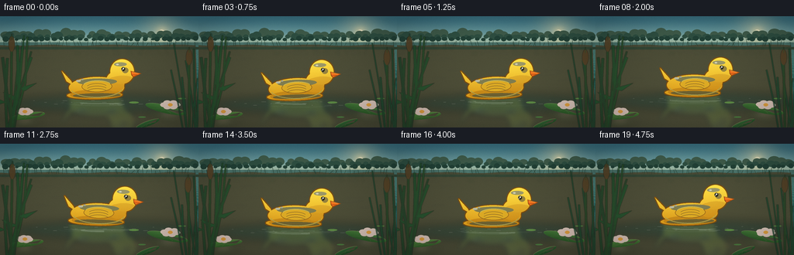
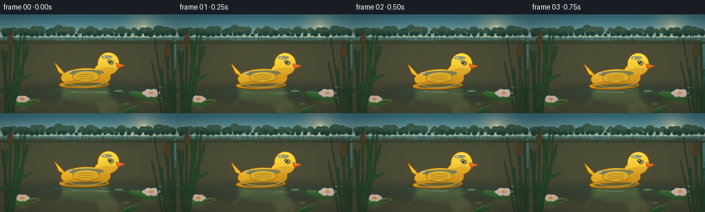
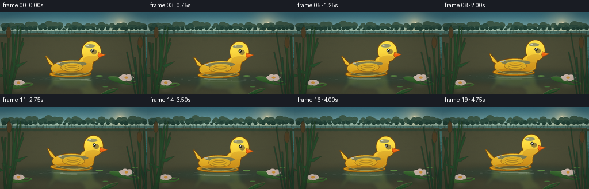
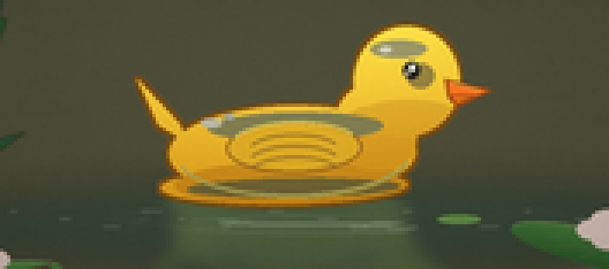
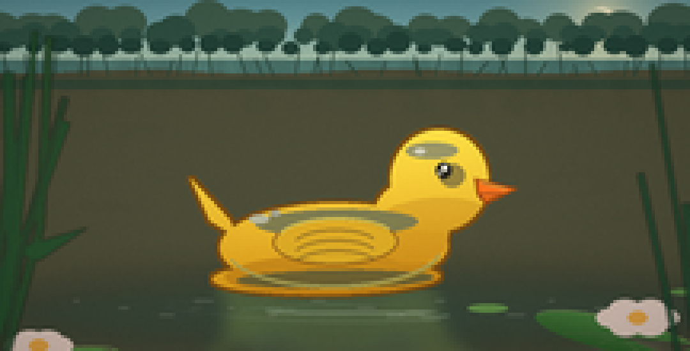
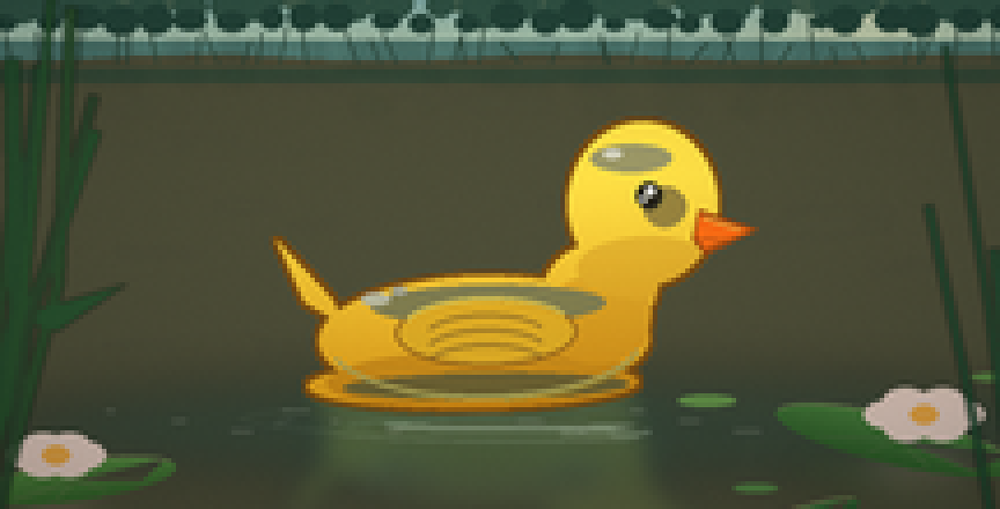
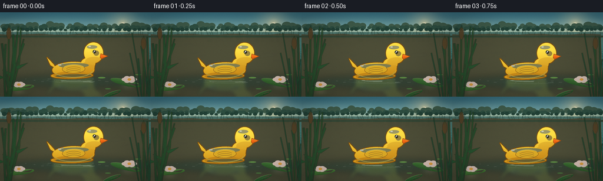

CODING AGENTS AS PIXEL WORLD MODELS
traex/DeepSeek-V4.1-Flash · mechanics_0011
点击播放 · 原生 RGB 像素
逐轮保存的候选
回放视频、检查图与代码变化。
每份候选均可单独播放。实际图片检查记录在下方工具轨迹中。
候选 01播放与检查图
点击播放 · 原生 RGB 像素


展开代码变化
--- 上一保存版本
+++ 本次保存版本
@@ -0,0 +1,619 @@
+from __future__ import annotations
+
+import math
+from pathlib import Path
+
+import numpy as np
+from PIL import Image, ImageDraw, ImageFilter
+
+import artifact_io
+
+
+ROOT = Path(__file__).resolve().parent
+W, H = 256, 144
+SS = 4
+RW, RH = W * SS, H * SS
+FPS = 4.0
+NFRAMES = 20
+
+
+def clamp01(value):
+ return np.clip(value, 0.0, 1.0)
+
+
+def smoothstep(edge0, edge1, value):
+ x = clamp01((value - edge0) / (edge1 - edge0))
+ return x * x * (3.0 - 2.0 * x)
+
+
+def render_sky(time: float) -> Image.Image:
+ yy, xx = np.mgrid[0:RH, 0:RW].astype(np.float32)
+ horizon = 0.235 * RH
+ v = np.clip(yy / horizon, 0.0, 1.0)
+
+ top = np.array([61, 119, 135], dtype=np.float32)
+ middle = np.array([112, 163, 166], dtype=np.float32)
+ warm = np.array([202, 215, 178], dtype=np.float32)
+ blend = smoothstep(0.0, 0.72, v)[..., None]
+ sky = top * (1.0 - blend) + middle * blend
+ horizon_glow = smoothstep(0.58, 1.0, v)[..., None]
+ sky = sky * (1.0 - horizon_glow * 0.62) + warm * (horizon_glow * 0.62)
+
+ sun_x, sun_y = 0.815 * RW, 0.145 * RH
+ dist = np.sqrt((xx - sun_x) ** 2 + (yy - sun_y) ** 2)
+ glow = np.exp(-(dist / (0.17 * RH)) ** 2) * 0.36
+ halo = np.exp(-(dist / (0.055 * RH)) ** 2) * 0.56
+ sun_mask = np.clip((0.030 * RH - dist) / (0.008 * RH), 0.0, 1.0)
+ sun_color = np.array([255, 238, 183], dtype=np.float32)
+ sky = sky * (1.0 - glow[..., None]) + sun_color * glow[..., None]
+ sky = sky * (1.0 - halo[..., None]) + sun_color * halo[..., None]
+ sky = sky * (1.0 - sun_mask[..., None]) + np.array([255, 247, 211]) * sun_mask[..., None]
+
+ # Thin, slow cloud bands catch the late-afternoon light.
+ cloud = Image.new("RGBA", (RW, RH), (0, 0, 0, 0))
+ cd = ImageDraw.Draw(cloud)
+ for index, (cx, cy, cw, ch, alpha) in enumerate(
+ [
+ (0.12, 0.12, 0.31, 0.028, 31),
+ (0.27, 0.17, 0.22, 0.020, 24),
+ (0.55, 0.10, 0.29, 0.021, 22),
+ (0.68, 0.19, 0.25, 0.025, 25),
+ (0.04, 0.205, 0.24, 0.017, 20),
+ ]
+ ):
+ drift = math.sin(time * 0.18 + index * 1.7) * 0.006 * RW
+ box = (
+ int((cx - cw / 2) * RW + drift),
+ int((cy - ch / 2) * RH),
+ int((cx + cw / 2) * RW + drift),
+ int((cy + ch / 2) * RH),
+ )
+ cd.rounded_rectangle(box, radius=max(2, box[3] - box[1]), fill=(237, 230, 205, alpha))
+ cloud = cloud.filter(ImageFilter.GaussianBlur(9 * SS))
+ sky_image = Image.fromarray(np.uint8(clamp01(sky / 255.0) * 255.0), "RGB").convert("RGBA")
+ sky_image.alpha_composite(cloud)
+ return sky_image
+
+
+def render_water(time: float) -> Image.Image:
+ yy, xx = np.mgrid[0:RH, 0:RW].astype(np.float32)
+ horizon = 0.235 * RH
+ focal = 1.18 * RH
+ camera_height = 1.35
+ below = np.maximum(yy - horizon, 1.0)
+ depth = camera_height * focal / below
+ world_x = (xx - 0.5 * RW) * depth / focal
+
+ # Several shallow, crossing wave trains make a coherent rippled surface.
+ a1, kx1, kz1, w1, p1 = 0.0100, 8.2, 2.7, 1.05, 0.3
+ a2, kx2, kz2, w2, p2 = 0.0065, -5.6, 4.1, -1.45, 1.7
+ a3, kx3, kz3, w3, p3 = 0.0037, 13.0, -6.2, 2.05, 2.2
+ a4, kx4, kz4, w4, p4 = 0.0020, 20.5, 10.8, -2.7, 0.7
+
+ phase1 = kx1 * world_x + kz1 * depth + w1 * time + p1
+ phase2 = kx2 * world_x + kz2 * depth + w2 * time + p2
+ phase3 = kx3 * world_x + kz3 * depth + w3 * time + p3
+ phase4 = kx4 * world_x + kz4 * depth + w4 * time + p4
+
+ h = a1 * np.sin(phase1) + a2 * np.sin(phase2) + a3 * np.sin(phase3) + a4 * np.sin(phase4)
+ dhdx = (
+ a1 * kx1 * np.cos(phase1)
+ + a2 * kx2 * np.cos(phase2)
+ + a3 * kx3 * np.cos(phase3)
+ + a4 * kx4 * np.cos(phase4)
+ )
+ dhdz = (
+ a1 * kz1 * np.cos(phase1)
+ + a2 * kz2 * np.cos(phase2)
+ + a3 * kz3 * np.cos(phase3)
+ + a4 * kz4 * np.cos(phase4)
+ )
+
+ nx = -dhdx
+ nz = -dhdz
+ norm = np.sqrt(nx * nx + 1.0 + nz * nz)
+ nx /= norm
+ ny = 1.0 / norm
+ nz /= norm
+
+ # Surface-to-camera vector.
+ vx = -world_x
+ vy = camera_height
+ vz = -depth
+ vnorm = np.sqrt(vx * vx + vy * vy + vz * vz)
+ vx /= vnorm
+ vy /= vnorm
+ vz /= vnorm
+ ndotv = clamp01(nx * vx + ny * vy + nz * vz)
+ fresnel = 0.018 + 0.982 * np.power(1.0 - ndotv, 5.0)
+
+ # Reflection color: sky above, with a dark, broken tree-line reflection near the bank.
+ rv = 2.0 * ndotv * ny - vy
+ reflect_up = smoothstep(-0.02, 0.52, rv)
+ reflect_near = np.array([89, 137, 126], dtype=np.float32)
+ reflect_far = np.array([130, 174, 166], dtype=np.float32)
+ reflect_sky = np.array([150, 190, 186], dtype=np.float32)
+ reflect_col = reflect_near * (1.0 - reflect_up[..., None]) + reflect_far * reflect_up[..., None]
+ reflect_col = reflect_col * 0.82 + reflect_sky * 0.18
+
+ bank_reflect = np.exp(-((yy - horizon) / (0.13 * RH)) ** 2) * 0.34
+ bank_tint = np.array([43, 75, 64], dtype=np.float32)
+ reflect_col = reflect_col * (1.0 - bank_reflect[..., None]) + bank_tint * bank_reflect[..., None]
+
+ base_near = np.array([12, 82, 78], dtype=np.float32)
+ base_far = np.array([41, 118, 105], dtype=np.float32)
+ distance_mix = smoothstep(horizon, 0.92 * RH, yy)[..., None]
+ water_base = base_near * (1.0 - distance_mix) + base_far * distance_mix
+
+ # Subtle caustic variation in the body color.
+ texture = (
+ 0.5
+ + 0.22 * np.sin(phase1 * 0.53 + 1.8)
+ + 0.16 * np.sin(phase2 * 0.41 - 0.7)
+ + 0.12 * np.sin(phase4 * 0.35)
+ )
+ water_base *= (0.92 + 0.13 * texture)[..., None]
+
+ light = np.array([0.31, 0.46, -0.83], dtype=np.float32)
+ light /= np.linalg.norm(light)
+ rdotl = nx * light[0] + ny * light[1] + nz * light[2]
+ specular = np.power(np.maximum(rdotl, 0.0), 180.0)
+ broad_glint = np.power(np.maximum(rdotl, 0.0), 24.0) * 0.18
+
+ color = water_base * (1.0 - fresnel[..., None]) + reflect_col * fresnel[..., None]
+ color += np.array([255, 235, 178], dtype=np.float32) * (specular * 0.80)[..., None]
+ color += np.array([224, 244, 218], dtype=np.float32) * (broad_glint * 0.24)[..., None]
+
+ # Distant water is slightly hazier.
+ haze = np.exp(-((yy - horizon) / (0.18 * RH)) ** 2)[..., None] * 0.12
+ color = color * (1.0 - haze) + np.array([145, 176, 160]) * haze
+ color = np.clip(color, 0.0, 255.0).astype(np.uint8)
+ return Image.fromarray(color, "RGB").convert("RGBA")
+
+
+def draw_far_bank(image: Image.Image, time: float) -> None:
+ draw = ImageDraw.Draw(image, "RGBA")
+ horizon = int(0.235 * RH)
+
+ # Layered, softly colored tree masses.
+ rng = np.random.default_rng(23)
+ layers = [
+ (horizon - int(0.060 * RH), (67, 96, 76, 205), 23, 0.026),
+ (horizon - int(0.043 * RH), (49, 83, 67, 230), 28, 0.019),
+ (horizon - int(0.024 * RH), (35, 67, 54, 248), 31, 0.013),
+ ]
+ for layer_index, (base_y, color, count, radius) in enumerate(layers):
+ for i in range(count):
+ x = (i + 0.28 + rng.random() * 0.55) * RW / count
+ sway = math.sin(time * 0.34 + i * 1.31 + layer_index) * 0.8 * SS
+ rx = radius * RW * (0.62 + rng.random() * 0.62)
+ ry = rx * (0.58 + rng.random() * 0.32)
+ cy = base_y - ry * (0.20 + rng.random() * 0.48)
+ draw.ellipse((x - rx + sway, cy - ry, x + rx + sway, cy + ry), fill=color)
+
+ # A low, irregular bank and the first reflected trunks.
+ bank_y = horizon + 3 * SS
+ points = [(0, RH)]
+ for x in range(0, RW + 1, 12 * SS):
+ y = bank_y + int((0.7 + 0.8 * math.sin(x * 0.019)) * SS)
+ points.append((x, y))
+ points.append((RW, RH))
+ draw.polygon(points, fill=(79, 78, 54, 255))
+ draw.rectangle((0, bank_y + 3 * SS, RW, bank_y + 6 * SS), fill=(54, 72, 52, 255))
+
+ # Sparse reeds on the opposite shore.
+ for i in range(46):
+ x = int((i / 46.0) * RW + rng.normal(0, 2.2 * SS))
+ height = int((0.012 + rng.random() * 0.045) * RH)
+ lean = rng.normal(0, 2.0 * SS)
+ sway = math.sin(time * 0.7 + i) * 0.7 * SS
+ color = (43, 69, 53, 190 + int(rng.random() * 50))
+ draw.line(
+ [(x, bank_y + 2 * SS), (x + lean + sway, bank_y - height)],
+ fill=color,
+ width=max(1, int(0.55 * SS)),
+ )
+
+
+def draw_reflections(image: Image.Image, time: float) -> None:
+ horizon = int(0.235 * RH)
+ reflection = Image.new("RGBA", (RW, RH), (0, 0, 0, 0))
+ draw = ImageDraw.Draw(reflection)
+ rng = np.random.default_rng(14)
+
+ # Broken dark reflections of the tree line.
+ for i in range(29):
+ x = int((i + rng.random() * 0.7) * RW / 29)
+ width = int((2.0 + rng.random() * 8.0) * SS)
+ length = int((0.025 + rng.random() * 0.11) * RH)
+ phase = math.sin(time * 0.9 + i * 0.8)
+ drift = int(phase * 1.6 * SS)
+ for j in range(0, length, 6 * SS):
+ alpha = int(46 * (1.0 - j / max(length, 1)))
+ wobble = int(math.sin(j * 0.06 + time * 1.2 + i) * 2.0 * SS)
+ draw.rounded_rectangle(
+ (x + drift + wobble, horizon + j, x + drift + wobble + width, horizon + j + 4 * SS),
+ radius=2 * SS,
+ fill=(30, 62, 51, alpha),
+ )
+
+ # Warm reflected sky streaks.
+ for i in range(24):
+ x = int(rng.uniform(0.10, 0.92) * RW)
+ y = int(rng.uniform(0.25, 0.83) * RH)
+ length = int(rng.uniform(9, 32) * SS)
+ alpha = int(rng.uniform(14, 36))
+ draw.line((x, y, x + length, y + int(rng.normal(0, 1.2 * SS))), fill=(220, 224, 190, alpha), width=SS)
+
+ reflection = reflection.filter(ImageFilter.GaussianBlur(1.3 * SS))
+ image.alpha_composite(reflection)
+
+
+def rounded_path_points() -> list[tuple[float, float]]:
+ # Not used for the duck itself, but keeps a single helper for smooth blades below.
+ return []
+
+
+def draw_duck_tile(time: float) -> tuple[Image.Image, int, int]:
+ tw, th = 440, 300
+ tile = Image.new("RGBA", (tw, th), (0, 0, 0, 0))
+ mask = Image.new("L", (tw, th), 0)
+ md = ImageDraw.Draw(mask)
+
+ # Silhouette: rounded body, raised tail, and oversized toy head.
+ md.ellipse((55, 166, 340, 274), fill=255)
+ md.ellipse((245, 140, 342, 252), fill=255)
+ md.ellipse((270, 76, 392, 203), fill=255)
+ md.polygon([(66, 183), (20, 133), (43, 186), (79, 208)], fill=255)
+ md.ellipse((45, 238, 330, 280), fill=255)
+
+ outline_mask = mask.filter(ImageFilter.MaxFilter(9))
+ outline = Image.new("RGBA", (tw, th), (0, 0, 0, 0))
+ od = ImageDraw.Draw(outline)
+ od.bitmap((0, 0), outline_mask, fill=(126, 77, 15, 255))
+
+ # Yellow plastic gradient with a warm underside.
+ yy = np.arange(th, dtype=np.float32)[:, None]
+ top = np.array([255, 225, 70], dtype=np.float32)
+ bottom = np.array([226, 157, 24], dtype=np.float32)
+ mix = np.clip((yy - 85) / 190.0, 0.0, 1.0)
+ grad = top * (1.0 - mix[..., None]) + bottom * mix[..., None]
+ grad = np.repeat(grad, tw, axis=1)
+ fill = Image.fromarray(np.uint8(grad), "RGB").convert("RGBA")
+ fill.putalpha(mask)
+ outline.alpha_composite(fill)
+
+ d = ImageDraw.Draw(outline, "RGBA")
+ # Deep amber occlusion around the base and neck.
+ shadow_layer = Image.new("RGBA", (tw, th), (0, 0, 0, 0))
+ sd = ImageDraw.Draw(shadow_layer)
+ sd.ellipse((61, 230, 336, 282), fill=(170, 101, 12, 100))
+ sd.ellipse((247, 167, 344, 243), fill=(184, 109, 13, 78))
+ sd.ellipse((271, 161, 391, 203), fill=(181, 109, 16, 62))
+ shadow_layer.putalpha(Image.composite(shadow_layer.getchannel("A"), Image.new("L", (tw, th), 0), mask))
+ outline.alpha_composite(shadow_layer)
+
+ # Body highlight and a soft lower rim make the molded plastic read as glossy.
+ d.ellipse((100, 174, 303, 207), fill=(255, 242, 139, 76))
+ d.ellipse((75, 250, 322, 272), fill=(246, 183, 44, 68))
+ d.arc((63, 172, 334, 272), 12, 164, fill=(255, 233, 109, 150), width=4)
+
+ # Wing with layered feather grooves.
+ d.ellipse((121, 185, 278, 244), fill=(238, 181, 36, 235), outline=(181, 112, 16, 190), width=3)
+ d.arc((127, 184, 274, 234), 196, 338, fill=(255, 229, 93, 190), width=4)
+ for offset in (0, 13, 26):
+ d.arc(
+ (145, 199 + offset, 253, 240 + offset),
+ 205,
+ 334,
+ fill=(186, 117, 19, 115),
+ width=2,
+ )
+
+ # Head shine, cheek, eye, and the bright orange beak.
+ d.ellipse((289, 92, 355, 112), fill=(255, 246, 163, 116))
+ d.ellipse((331, 119, 363, 148), fill=(255, 207, 72, 110))
+ d.ellipse((327, 117, 346, 137), fill=(40, 35, 23, 255))
+ d.ellipse((334, 120, 341, 128), fill=(255, 255, 237, 245))
+ d.ellipse((329, 127, 334, 133), fill=(255, 255, 255, 150))
+
+ beak_outline = [(375, 137), (430, 151), (388, 171), (378, 159)]
+ d.polygon(beak_outline, fill=(163, 72, 13, 255))
+ d.polygon([(379, 140), (424, 152), (388, 165), (381, 156)], fill=(255, 116, 28, 255))
+ d.line((381, 157, 409, 157), fill=(173, 67, 14, 210), width=2)
+ d.line((383, 143, 414, 151), fill=(255, 193, 76, 190), width=3)
+
+ # Tiny molded seam and specular beads.
+ d.arc((70, 178, 332, 274), 12, 84, fill=(247, 188, 34, 150), width=2)
+ d.ellipse((92, 179, 117, 190), fill=(255, 255, 228, 155))
+ d.ellipse((118, 174, 132, 181), fill=(255, 255, 239, 130))
+ d.ellipse((300, 99, 314, 106), fill=(255, 255, 238, 190))
+
+ angle = 1.8 * math.sin(time * 1.45 + 0.5)
+ rotated = outline.rotate(angle, resample=Image.Resampling.BICUBIC, center=(220, 215))
+ return rotated, tw, th
+
+
+def draw_duck_and_ripples(image: Image.Image, time: float) -> None:
+ duck, tw, th = draw_duck_tile(time)
+ bob = math.sin(time * 2.05 + 0.35) * 2.1 * SS
+ drift = math.sin(time * 0.72 + 0.2) * 4.0 * SS
+ center_x = int(0.505 * RW + drift)
+ waterline = int(0.705 * RH + bob)
+ left = center_x - tw // 2
+ top = waterline - 260
+
+ # Contact shadow and the reflected toy, softly broken by the ripples.
+ fx = Image.new("RGBA", (RW, RH), (0, 0, 0, 0))
+ fd = ImageDraw.Draw(fx)
+ fd.ellipse(
+ (center_x - 116 * SS, waterline - 2 * SS, center_x + 135 * SS, waterline + 24 * SS),
+ fill=(4, 51, 50, 75),
+ )
+ fx = fx.filter(ImageFilter.GaussianBlur(5 * SS))
+ image.alpha_composite(fx)
+
+ reflected = duck.crop((0, 0, tw, 262)).transpose(Image.Transpose.FLIP_TOP_BOTTOM)
+ ra = np.asarray(reflected).copy()
+ fade = np.linspace(0.34, 0.0, ra.shape[0], dtype=np.float32)[:, None, None]
+ ra[:, :, 0] = np.uint8(ra[:, :, 0] * 0.58 + 18)
+ ra[:, :, 1] = np.uint8(ra[:, :, 1] * 0.74 + 55)
+ ra[:, :, 2] = np.uint8(ra[:, :, 2] * 0.72 + 58)
+ ra[:, :, 3] = np.uint8(ra[:, :, 3].astype(np.float32) * fade[..., 0])
+ reflected = Image.fromarray(ra, "RGBA").filter(ImageFilter.GaussianBlur(3.0 * SS))
+ image.alpha_composite(reflected, (left, waterline + 4 * SS))
+
+ ripple = Image.new("RGBA", (RW, RH), (0, 0, 0, 0))
+ rd = ImageDraw.Draw(ripple)
+ for ring in range(5):
+ phase = (time * 0.43 + ring * 0.205) % 1.0
+ rx = (0.11 + phase * 0.145) * RW
+ ry = (0.014 + phase * 0.019) * RH
+ alpha = int(72 * (1.0 - phase) ** 1.4)
+ cy = waterline + 10 * SS + math.sin(time * 1.3 + ring) * 1.3 * SS
+ start = 7 + ring * 19 + math.sin(time * 1.1 + ring) * 5
+ end = 165 + ring * 13
+ rd.arc(
+ (center_x - rx, cy - ry, center_x + rx, cy + ry),
+ start,
+ end,
+ fill=(222, 242, 221, alpha),
+ width=2 * SS,
+ )
+ rd.arc(
+ (center_x - rx, cy - ry, center_x + rx, cy + ry),
+ end + 16,
+ end + 102,
+ fill=(160, 213, 199, alpha // 2),
+ width=SS,
+ )
+ ripple = ripple.filter(ImageFilter.GaussianBlur(0.35 * SS))
+ image.alpha_composite(ripple)
+
+ # Fine specular glints immediately around the waterline.
+ glint = Image.new("RGBA", (RW, RH), (0, 0, 0, 0))
+ gd = ImageDraw.Draw(glint)
+ for i in range(14):
+ x = center_x + int((i - 7) * 12.5 * SS + math.sin(time + i) * 2 * SS)
+ y = waterline + int((7 + (i % 3) * 2.3) * SS)
+ length = int((2.5 + (i % 4) * 1.4) * SS)
+ gd.line((x, y, x + length, y), fill=(242, 249, 220, 78), width=SS)
+ glint = glint.filter(ImageFilter.GaussianBlur(0.45 * SS))
+ image.alpha_composite(glint)
+ image.alpha_composite(duck, (left, top))
+
+
+def draw_lily_pad(
+ layer: Image.Image,
+ cx: int,
+ cy: int,
+ rx: int,
+ ry: int,
+ angle: float,
+ tone: tuple[int, int, int],
+) -> None:
+ pad = Image.new("RGBA", (2 * rx + 12, 2 * ry + 12), (0, 0, 0, 0))
+ mask = Image.new("L", pad.size, 0)
+ md = ImageDraw.Draw(mask)
+ md.ellipse((6, 6, 6 + 2 * rx, 6 + 2 * ry), fill=255)
+ # The notch points toward the center of the pond.
+ md.polygon(
+ [
+ (6 + rx, 6 + ry),
+ (6 + int(1.95 * rx), 6 + int(0.52 * ry)),
+ (6 + int(1.65 * rx), 6 + int(1.48 * ry)),
+ ],
+ fill=0,
+ )
+
+ yy = np.arange(pad.height, dtype=np.float32)[:, None]
+ mix = np.clip((yy - 6) / max(1, 2 * ry), 0.0, 1.0)
+ top = np.array(tone, dtype=np.float32)
+ bottom = top * np.array([0.62, 0.72, 0.64], dtype=np.float32)
+ grad = top * (1.0 - mix[..., None]) + bottom * mix[..., None]
+ grad = np.repeat(grad, pad.width, axis=1)
+ pad = Image.fromarray(np.uint8(np.clip(grad, 0, 255)), "RGB").convert("RGBA")
+ pad.putalpha(mask)
+
+ d = ImageDraw.Draw(pad, "RGBA")
+ d.arc((6, 6, 6 + 2 * rx, 6 + 2 * ry), 188, 344, fill=(179, 210, 117, 110), width=2)
+ notch_x = 6 + rx
+ notch_y = 6 + ry
+ for frac in (0.24, 0.40, 0.57, 0.74):
+ ex = 6 + int(2 * rx * (0.5 + 0.46 * math.cos(math.pi * frac)))
+ ey = 6 + int(2 * ry * (0.5 + 0.40 * math.sin(math.pi * frac)))
+ d.line((notch_x, notch_y, ex, ey), fill=(111, 155, 80, 82), width=1)
+ pad = pad.rotate(angle, resample=Image.Resampling.BICUBIC, expand=True)
+ layer.alpha_composite(pad, (cx - pad.width // 2, cy - pad.height // 2))
+
+
+def draw_floating_plants(image: Image.Image, time: float) -> None:
+ layer = Image.new("RGBA", (RW, RH), (0, 0, 0, 0))
+ motion = math.sin(time * 0.62)
+ draw_lily_pad(
+ layer,
+ int(0.835 * RW + motion * 2.5 * SS),
+ int(0.835 * RH),
+ int(0.105 * RW),
+ int(0.038 * RH),
+ -13 + motion * 1.2,
+ (73, 126, 58),
+ )
+ draw_lily_pad(
+ layer,
+ int(0.142 * RW - motion * 2.0 * SS),
+ int(0.895 * RH),
+ int(0.085 * RW),
+ int(0.030 * RH),
+ 8 - motion * 1.1,
+ (84, 136, 61),
+ )
+ draw_lily_pad(
+ layer,
+ int(0.745 * RW),
+ int(0.965 * RH),
+ int(0.062 * RW),
+ int(0.023 * RH),
+ 20,
+ (55, 106, 53),
+ )
+
+ # Small bright leaves and a couple of pale blossoms.
+ d = ImageDraw.Draw(layer, "RGBA")
+ for x, y, rx, ry, col in [
+ (0.675, 0.775, 0.025, 0.008, (103, 154, 72, 220)),
+ (0.716, 0.906, 0.019, 0.006, (81, 136, 65, 210)),
+ (0.917, 0.739, 0.020, 0.006, (93, 145, 67, 210)),
+ ]:
+ d.ellipse(
+ (
+ int((x - rx) * RW),
+ int((y - ry) * RH),
+ int((x + rx) * RW),
+ int((y + ry) * RH),
+ ),
+ fill=col,
+ )
+ for bx, by, scale in [(0.858, 0.796, 1.0), (0.125, 0.857, 0.72)]:
+ x, y = int(bx * RW), int(by * RH)
+ for k in range(6):
+ a = k * math.pi / 3 + time * 0.08
+ px = x + int(math.cos(a) * 8 * SS * scale)
+ py = y + int(math.sin(a) * 3.2 * SS * scale)
+ d.ellipse(
+ (px - 5 * SS, py - 3 * SS, px + 5 * SS, py + 3 * SS),
+ fill=(255, 226, 215, 210),
+ )
+ d.ellipse((x - 3 * SS, y - 2 * SS, x + 3 * SS, y + 2 * SS), fill=(241, 170, 66, 235))
+
+ # A soft green reflection under the pads.
+ refl = layer.filter(ImageFilter.GaussianBlur(4 * SS))
+ refl.putalpha(refl.getchannel("A").point(lambda a: int(a * 0.18)))
+ image.alpha_composite(refl, (0, 10 * SS))
+ image.alpha_composite(layer)
+
+
+def draw_reeds(image: Image.Image, time: float) -> None:
+ rng = np.random.default_rng(91)
+ foreground = Image.new("RGBA", (RW, RH), (0, 0, 0, 0))
+ fd = ImageDraw.Draw(foreground, "RGBA")
+
+ def stem(points, color, width):
+ fd.line(points, fill=color, width=max(1, int(width)), joint="curve")
+
+ # Left framing reeds.
+ for i in range(9):
+ base_x = int(rng.uniform(0.005, 0.115) * RW)
+ base_y = RH + int(rng.uniform(0, 0.06) * RH)
+ tip_x = base_x + int(rng.uniform(-0.07, 0.11) * RW)
+ tip_y = int(rng.uniform(0.16, 0.54) * RH)
+ sway = math.sin(time * 0.55 + i * 1.1) * 1.8 * SS
+ mid_x = (base_x + tip_x) // 2 + int(rng.uniform(-0.025, 0.025) * RW) + int(sway)
+ mid_y = (base_y + tip_y) // 2
+ color = (30 + i % 3 * 5, 67 + i % 4 * 4, 39, 210 + i % 3 * 12)
+ stem([(base_x, base_y), (mid_x, mid_y), (tip_x, tip_y)], color, (2.0 + rng.random() * 2.0) * SS)
+ if i in (1, 3, 6):
+ leaf_y = int(mid_y + rng.uniform(-0.08, 0.08) * RH)
+ direction = -1 if i % 2 else 1
+ leaf_tip = (mid_x + direction * int(rng.uniform(0.045, 0.095) * RW), leaf_y - int(0.055 * RH))
+ leaf_mid = (mid_x + direction * int(0.035 * RW), leaf_y + int(0.018 * RH))
+ fd.polygon(
+ [(mid_x, leaf_y), leaf_mid, leaf_tip, (mid_x + direction * int(0.014 * RW), leaf_y - 2 * SS)],
+ fill=(36, 82, 43, 230),
+ )
+
+ # Right-side stems, kept out of the duck's silhouette.
+ for i in range(7):
+ base_x = int(rng.uniform(0.91, 1.01) * RW)
+ base_y = RH + int(rng.uniform(0, 0.05) * RH)
+ tip_x = base_x + int(rng.uniform(-0.10, 0.03) * RW)
+ tip_y = int(rng.uniform(0.19, 0.58) * RH)
+ sway = math.sin(time * 0.5 + i * 1.4) * 1.5 * SS
+ stem(
+ [(base_x, base_y), ((base_x + tip_x) // 2 + int(sway), (base_y + tip_y) // 2), (tip_x, tip_y)],
+ (31, 71, 43, 220),
+ (1.7 + rng.random() * 1.6) * SS,
+ )
+
+ # Two soft cattails for silhouette variety.
+ for base_x, top_y in [(int(0.055 * RW), int(0.18 * RH)), (int(0.955 * RW), int(0.30 * RH))]:
+ sway = int(math.sin(time * 0.55 + base_x * 0.01) * 2 * SS)
+ fd.line((base_x, RH, base_x + sway, top_y + 12 * SS), fill=(44, 72, 38, 245), width=3 * SS)
+ fd.ellipse(
+ (base_x + sway - 4 * SS, top_y, base_x + sway + 4 * SS, top_y + 20 * SS),
+ fill=(87, 66, 36, 240),
+ )
+ fd.line((base_x + sway, top_y - 3 * SS, base_x + sway, top_y + 4 * SS), fill=(59, 76, 38, 220), width=SS)
+
+ foreground = foreground.filter(ImageFilter.GaussianBlur(0.35 * SS))
+ image.alpha_composite(foreground)
+
+
+def post_process(image: Image.Image, time: float, frame_index: int) -> Image.Image:
+ arr = np.asarray(image.convert("RGB"), dtype=np.float32) / 255.0
+ yy, xx = np.mgrid[0:RH, 0:RW].astype(np.float32)
+ nx = (xx / RW - 0.5) * 2.0
+ ny = (yy / RH - 0.5) * 2.0
+ vignette = np.clip(1.0 - 0.18 * (nx * nx * 0.75 + ny * ny), 0.74, 1.0)
+ arr *= vignette[..., None]
+
+ # Gentle warm highlights and cool shadows.
+ luminance = arr[..., 0] * 0.2126 + arr[..., 1] * 0.7152 + arr[..., 2] * 0.0722
+ shadow_weight = (1.0 - luminance)[..., None]
+ highlight_weight = smoothstep(0.55, 1.0, luminance)[..., None]
+ arr = arr * (1.0 - 0.045 * shadow_weight) + np.array([0.006, 0.014, 0.020]) * shadow_weight
+ arr += np.array([0.018, 0.010, 0.000]) * highlight_weight
+
+ rng = np.random.default_rng(700 + frame_index)
+ grain = rng.normal(0.0, 0.0065, (RH, RW, 1)).astype(np.float32)
+ arr = np.clip(arr + grain, 0.0, 1.0)
+ image = Image.fromarray(np.uint8(arr * 255.0), "RGB")
+ image = image.resize((W, H), Image.Resampling.LANCZOS)
+
+ # A final one-pixel soften removes high-contrast sampling speckle.
+ return image.filter(ImageFilter.GaussianBlur(0.18))
+
+
+def render_frame(frame_index: int) -> np.ndarray:
+ time = frame_index / FPS
+ sky = render_sky(time)
+ water = render_water(time)
+ horizon = int(0.235 * RH)
+ sky.alpha_composite(water.crop((0, horizon, RW, RH)), (0, horizon))
+ draw_far_bank(sky, time)
+ draw_reflections(sky, time)
+ draw_duck_and_ripples(sky, time)
+ draw_floating_plants(sky, time)
+ draw_reeds(sky, time)
+ final = post_process(sky, time, frame_index)
+ return np.asarray(final, dtype=np.uint8)
+
+
+def main() -> None:
+ frames = np.stack([render_frame(i) for i in range(NFRAMES)], axis=0)
+ artifact_io.save(frames, ROOT)
+ print(f"saved {frames.shape} RGB frames to {ROOT}")
+
+
+if __name__ == "__main__":
+ main()
候选 02播放与检查图
点击播放 · 原生 RGB 像素

展开代码变化
--- 上一保存版本
+++ 本次保存版本
@@ -255,7 +255,7 @@
def draw_duck_tile(time: float) -> tuple[Image.Image, int, int]:
- tw, th = 440, 300
+ tw, th = 440, 330
tile = Image.new("RGBA", (tw, th), (0, 0, 0, 0))
mask = Image.new("L", (tw, th), 0)
md = ImageDraw.Draw(mask)
@@ -263,7 +263,8 @@
# Silhouette: rounded body, raised tail, and oversized toy head.
md.ellipse((55, 166, 340, 274), fill=255)
md.ellipse((245, 140, 342, 252), fill=255)
- md.ellipse((270, 76, 392, 203), fill=255)
+ md.ellipse((272, 35, 401, 176), fill=255)
+ md.ellipse((286, 128, 349, 210), fill=255)
md.polygon([(66, 183), (20, 133), (43, 186), (79, 208)], fill=255)
md.ellipse((45, 238, 330, 280), fill=255)
@@ -289,7 +290,7 @@
sd = ImageDraw.Draw(shadow_layer)
sd.ellipse((61, 230, 336, 282), fill=(170, 101, 12, 100))
sd.ellipse((247, 167, 344, 243), fill=(184, 109, 13, 78))
- sd.ellipse((271, 161, 391, 203), fill=(181, 109, 16, 62))
+ sd.ellipse((279, 134, 400, 188), fill=(181, 109, 16, 62))
shadow_layer.putalpha(Image.composite(shadow_layer.getchannel("A"), Image.new("L", (tw, th), 0), mask))
outline.alpha_composite(shadow_layer)
@@ -311,26 +312,26 @@
)
# Head shine, cheek, eye, and the bright orange beak.
- d.ellipse((289, 92, 355, 112), fill=(255, 246, 163, 116))
- d.ellipse((331, 119, 363, 148), fill=(255, 207, 72, 110))
- d.ellipse((327, 117, 346, 137), fill=(40, 35, 23, 255))
- d.ellipse((334, 120, 341, 128), fill=(255, 255, 237, 245))
- d.ellipse((329, 127, 334, 133), fill=(255, 255, 255, 150))
-
- beak_outline = [(375, 137), (430, 151), (388, 171), (378, 159)]
+ d.ellipse((292, 54, 362, 78), fill=(255, 246, 163, 116))
+ d.ellipse((337, 91, 374, 126), fill=(255, 207, 72, 110))
+ d.ellipse((331, 87, 353, 110), fill=(40, 35, 23, 255))
+ d.ellipse((339, 90, 347, 99), fill=(255, 255, 237, 245))
+ d.ellipse((334, 98, 340, 105), fill=(255, 255, 255, 150))
+
+ beak_outline = [(385, 111), (436, 129), (390, 151), (379, 137)]
d.polygon(beak_outline, fill=(163, 72, 13, 255))
- d.polygon([(379, 140), (424, 152), (388, 165), (381, 156)], fill=(255, 116, 28, 255))
- d.line((381, 157, 409, 157), fill=(173, 67, 14, 210), width=2)
- d.line((383, 143, 414, 151), fill=(255, 193, 76, 190), width=3)
+ d.polygon([(386, 115), (429, 130), (390, 145), (382, 135)], fill=(255, 108, 18, 255))
+ d.line((383, 136, 413, 138), fill=(173, 67, 14, 220), width=2)
+ d.line((388, 118, 420, 129), fill=(255, 196, 71, 210), width=3)
# Tiny molded seam and specular beads.
d.arc((70, 178, 332, 274), 12, 84, fill=(247, 188, 34, 150), width=2)
d.ellipse((92, 179, 117, 190), fill=(255, 255, 228, 155))
d.ellipse((118, 174, 132, 181), fill=(255, 255, 239, 130))
- d.ellipse((300, 99, 314, 106), fill=(255, 255, 238, 190))
+ d.ellipse((303, 58, 319, 66), fill=(255, 255, 238, 190))
angle = 1.8 * math.sin(time * 1.45 + 0.5)
- rotated = outline.rotate(angle, resample=Image.Resampling.BICUBIC, center=(220, 215))
+ rotated = outline.rotate(angle, resample=Image.Resampling.BICUBIC, center=(220, 205))
return rotated, tw, th
@@ -339,9 +340,9 @@
bob = math.sin(time * 2.05 + 0.35) * 2.1 * SS
drift = math.sin(time * 0.72 + 0.2) * 4.0 * SS
center_x = int(0.505 * RW + drift)
- waterline = int(0.705 * RH + bob)
+ waterline = int(0.735 * RH + bob)
left = center_x - tw // 2
- top = waterline - 260
+ top = waterline - 254
# Contact shadow and the reflected toy, softly broken by the ripples.
fx = Image.new("RGBA", (RW, RH), (0, 0, 0, 0))
@@ -369,7 +370,7 @@
phase = (time * 0.43 + ring * 0.205) % 1.0
rx = (0.11 + phase * 0.145) * RW
ry = (0.014 + phase * 0.019) * RH
- alpha = int(72 * (1.0 - phase) ** 1.4)
+ alpha = int(98 * (1.0 - phase) ** 1.35)
cy = waterline + 10 * SS + math.sin(time * 1.3 + ring) * 1.3 * SS
start = 7 + ring * 19 + math.sin(time * 1.1 + ring) * 5
end = 165 + ring * 13
@@ -377,14 +378,14 @@
(center_x - rx, cy - ry, center_x + rx, cy + ry),
start,
end,
- fill=(222, 242, 221, alpha),
+ fill=(226, 246, 225, alpha),
width=2 * SS,
)
rd.arc(
(center_x - rx, cy - ry, center_x + rx, cy + ry),
end + 16,
end + 102,
- fill=(160, 213, 199, alpha // 2),
+ fill=(170, 221, 205, alpha // 2),
width=SS,
)
ripple = ripple.filter(ImageFilter.GaussianBlur(0.35 * SS))
可观测工具轨迹
实际执行的命令与返回图片。
命令 1exit 0
/bin/bash -c "pwd && rg --files -g '"'!*'"\\.git/*' | sed -n '1,120p'"
命令 2exit 0
/bin/bash -c "sed -n '1,240p' prompt.txt"
命令 3exit 0
/bin/bash -c "sed -n '1,280p' GENERATION_RULES.md"
命令 4exit 0
/bin/bash -c 'cat task_spec.json'
命令 5exit 0
/bin/bash -c "sed -n '1,260p' artifact_io.py"
命令 6exit 0
/bin/bash -c "sed -n '1,260p' player_template.html"
命令 7exit 0
/bin/bash -c "python - <<'PY' import importlib.util for m in ['numpy','PIL','cv2','imageio','scipy']: print(m, bool(importlib.util.find_spec(m))) PY"
命令 8exit 0
/bin/bash -c 'time python generate.py'
命令 9exit 0
/bin/bash -c 'which magick || which convert || true'
命令 10exit 0
/bin/bash -c "python - <<'PY'
from PIL import Image
im=Image.open('frames/00.png')
im.crop((40,48,216,126)).resize((1056,468),Image.Resampling.NEAREST).save('inspection_crop.png')
PY"命令 11exit 0
/bin/bash -c "python - <<'PY'
from PIL import Image
im=Image.open('frames/00.png')
im.crop((20,15,236,125)).resize((1080,550),Image.Resampling.NEAREST).save('inspection_crop2.png')
PY"命令 12exit 0
/bin/bash -c 'python generate.py'
命令 13exit 0
/bin/bash -c "python - <<'PY'
from PIL import Image
im=Image.open('frames/00.png')
im.crop((20,25,236,135)).resize((1080,550),Image.Resampling.NEAREST).save('inspection_crop.png')
PY"命令 14exit 0
/bin/bash -c "python - <<'PY'
import json, numpy as np
from PIL import Image
from pathlib import Path
import artifact_io
spec=json.load(open('task_spec.json'))
z=np.load('pixels.npz')['pixels']
print('spec', spec)
print('npz', z.shape, z.dtype)
frames=np.stack([np.asarray(Image.open(f'frames/{i:02d}.png').convert('RGB')) for i in range(20)])
print('frames', frames.shape, frames.dtype, 'range', int(frames.min()), int(frames.max()))
d=np.abs(np.diff(frames.astype(np.int16),axis=0)).mean(axis=(1,2,3))
print('mean adjacent diff', np.round(d,3))
print('unique colors/frame', [len(np.unique(frames[i].reshape(-1,3),axis=0)) for i in range(20)])
print('html bytes', Path('index.html').stat().st_size)
PY"视觉工具实际返回图片 1

视觉工具实际返回图片 2

视觉工具实际返回图片 3

视觉工具实际返回图片 4

视觉工具实际返回图片 5

视觉工具实际返回图片 6

保存候选 2 份；完成命令 14 次；可验证图片返回 6 张。原始 API 响应与完整日志保留在本地。